Yeni Nesil Dizileme Giriş
MBG4421 - Ders4
NGS data logistics isimli Galaxy eğitimi materyalinden uyarlanmıştır.
FASTQ manipülasyonu ve kalite kontrolü
FASTQ çok iyi tanımlanmamış bir formattır. Başlangıçta, çeşitli sekanslama cihazı üreticileri FASTQ’yu kendi gördükleri şekilde yorumlama özgürlüğüne sahipti, bu da birçok FASTQ çeşidinin ortaya çıkmasına neden oldu. Bu varyasyon öncelikle FASTQ için Wikipedia makalesinde açıklandığı gibi kalite değerlerinin farklı şekillerde kodlanmasından kaynaklanıyordu (kalite skorları ve anlamları hakkında aşağıda açıklama bulacaksınız). Bugün, FASTQ Sanger versiyonu formatın standart formu olarak kabul edilmektedir. Galaxy, downstream işleme araçları için tek meşru girdi olarak FASTQ Sanger’ı kullanmakta ve FASTQ dosyalarını bu forma dönüştürmek için bir dizi araç sunmaktadır (Galaxy araçlarının FASTQ Kalite Kontrolü bölümüne bakınız).
FASTQ formatı şu şekilde görünür:
@M02286:19:000000000-AA549:1:1101:12677:1273 1:N:0:23
CCTACGGGTGGCAGCAGTGAGGAATATTGGTCAATGGACGGAAGTCTGAACCAGCCAAGTAGCGTGCAG
+
ABC8C,:@F:CE8,B-,C,-6-9-C,CE9-CC--C-<-C++,,+;CE<,,CD,CEFC,@E9<FCFCF?9
@M02286:19:000000000-AA549:1:1101:15048:1299 1:N:0:23
CCTACGGGTGGCTGCAGTGAGGAATATTGGACAATGGTCGGAAGACTGATCCAGCCATGCCGCGTGCAG
+
ABC@CC77CFCEG;F9<F89<9--C,CE,--C-6C-,CE:++7:,CF<,CEF,CFGGD8FFCFCFEGCF
@M02286:19:000000000-AA549:1:1101:11116:1322 1:N:0:23
CCTACGGGAGGCAGCAGTAGGGAATCTTCGGCAATGGACGGAAGTCTGACCGAGCAACGCCGCGTGAGT
+
AAC<CCF+@@>CC,C9,F9C9@9-CFFFE@7@:+CC8-C@:7,@EFE,6CF:+8F7EFEEF@EGGGEEEHer sekanslama okuması dört satırla temsil edilir:
- Okuma ID’si ve sekanslama çalışması hakkında isteğe bağlı bilgiler ile başlayan
@ - Sekanslanmış bazlar
+(isteğe bağlı olarak okuma ID’si ve bazı ek bilgilerle birlikte)- ASCII sembolleri olarak kodlanmış sekansın her bazı için kalite skorları
Eşlenmiş uç verisi (Paired End)
Eşlenmiş-uç ve mate-pair sekanslama kütüphaneleri hazırlamak yaygındır. Bu, sonraki konularda tartışılan birçok uygulama için oldukça faydalıdır. Şimdilik bunların ne olduğunu ve FASTQ formunda nasıl göründüklerini kısaca tartışalım.
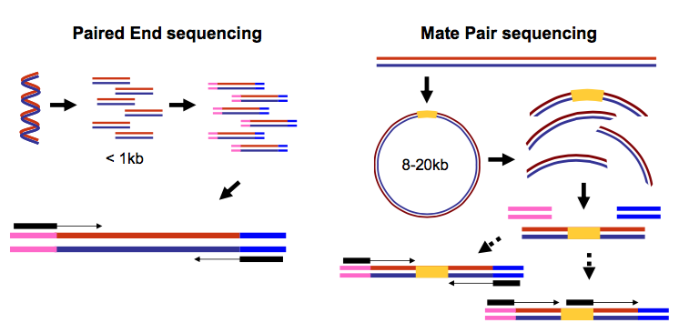
Eşlenmiş-uç ve mate-pair okumalar. Eşlenmiş uç sekanslama işleminde (sol) oldukça kısa DNA moleküllerinin (1kb’den az) gerçek uçları belirlenirken, mate pair sekanslama için (sağ) uzun moleküllerin uçları birleştirilir ve özel sekanslama kütüphanelerinde hazırlanır. Bu mate pair protokollerinde, uzun, boyut seçimli moleküllerin uçları bir daireselleştirme reaksiyonunda dahili bir adaptör sekansı (yani bağlayıcı, sarı) ile bağlanır. Dairesel molekül daha sonra restriksiyon enzimleri veya fragmentasyon kullanılarak işlenir. Fragmentler bağlayıcı için zenginleştirilir ve dış kütüphane adaptörleri iki birleştirilmiş molekül ucunun etrafına eklenir. Dahili adaptör daha sonra aynı yönde ek bir sekanslama reaksiyonu için ikinci bir başlatma bölgesi olarak kullanılabilir veya sekanslama ikinci adaptörden, ters zincirden gerçekleştirilebilir. (Martin Kircher’ın “Understanding and improving high-throughput sequencing data production and analysis” başlıklı doktora tezinden)
Bu nedenle her iki durumda da (eşlenmiş-uç ve mate-pair) tek bir fiziksel DNA parçası (veya RNA-seq durumunda RNA) iki uçtan sekanslanır ve böylece iki okuma oluşturur. Bunlar ayrı dosyalar (birinci ve ikinci okumalar için iki FASTQ dosyası) veya her uç için okumaların iç içe geçtiği tek bir dosya olarak gösterilebilir. İşte örnekler:
İki ayrı dosya
Dosya 1
@M02286:19:000000000-AA549:1:1101:12677:1273 1:N:0:23
CCTACGGGTGGCAGCAGTGAGGAATATTGGTCAATGGACGGAAGTCT
+
ABC8C,:@F:CE8,B-,C,-6-9-C,CE9-CC--C-<-C++,,+;CE
@M02286:19:000000000-AA549:1:1101:15048:1299 1:N:0:23
CCTACGGGTGGCTGCAGTGAGGAATATTGGACAATGGTCGGAAGACT
+
ABC@CC77CFCEG;F9<F89<9--C,CE,--C-6C-,CE:++7:,CFDosya 2
@M02286:19:000000000-AA549:1:1101:12677:1273 2:N:0:23
CACTACCCGTGTATCTAATCCTGTTTGATACCCGCACCTTCGAGCTTA
+
--8A,CCE+,,;,<CC,,<CE@,CFD,,C,CFF+@+@CCEF,,,B+C,
@M02286:19:000000000-AA549:1:1101:15048:1299 2:N:0:23
CACTACCGGGGTATCTAATCCTGTTCGCTCCCCACGCTTTCGTCCATC
+
-6AC,EE@::CF7CFF<<FFGGDFFF,@FGGGG?F7FEGGGDEFF>FFYorum: Okuma sırası önemlidir
İki dosyadaki okuma ID’lerinin aynı olduğuna ve aynı sırada listelendiğine dikkat edin. Bazı durumlarda birinci ve ikinci dosyadaki okuma ID’lerine sırasıyla
/1ve/2etiketleri eklenebilir.
İç içe geçmiş dosya (Interleaved)
@1/1
AGGGATGTGTTAGGGTTAGGGTTAGGGTTAGGGTTAGGGTTAGGGTTA
+
EGGEGGGDFGEEEAEECGDEGGFEEGEFGBEEDDECFEFDD@CDD<ED
@1/2
CCTAACCCTAACCCTAACCCTAACCCTAACCCTAACCCTAACCCTAAC
+
GHHHDFDFGFGEGFBGEGGEGEGGGHGFGHFHFHHHHHHHEF?EFEFF
@2/1
AGGGATGTGTTAGGGTTAGGGTTAGGGTTAGGGTTAGGGTTAGGGTTA
+
HHHHHHEGFHEEFEEHEEHHGGEGGGGEFGFGGGGHHHHFBEEEEEFG
@2/2
CCTAACCCTAACCCTAACCCTAACCCTAACCCTAACCCTAACCCTAAC
+
HHHHHHHHHHHHHGHHHHHHGHHHHHHHHHHHFHHHFHHHHHHHHHHHBurada birinci ve ikinci okumalar /1 ve /2 etiketleriyle tanımlanmıştır.
Yorum: FASTQ formatı katı kuralları olmayan bir standarttır
FASTQ formatı katı bir şekilde tanımlanmamıştır ve varyasyonları her zaman size baş ağrısı yaratacaktır. Daha fazla bilgi için bu sayfaya bakın.
Baz kaliteleri nedir?
Yukarıda gördüğümüz gibi, FASTQ veri setleri iki tür bilgi içerir:
- okumanın sekansı
- okumadaki her nükleotid için baz kaliteleri.
Baz kaliteleri, sekanslama okumasındaki her bazın ne kadar güvenilir olduğunu değerlendirmemize olanak tanır. Friederike Dündar, Luce Skrabanek, Paul Zumbo tarafından hazırlanan mükemmel bir öğreticiden alınan aşağıdaki alıntı baz kalitelerinin ne olduğunu açıklamaktadır:
Yorum: “RNA-seq kullanarak diferansiyel gen ekspresyon analizine giriş”ten
Illumina sekanslama, büyüyen sekanslama okumasına dahil edilmeleri üzerine yayılan floresan sinyalini tanımlayarak tek tek nükleotidleri belirlemeye dayanır. Floresan yoğunlukları çıkarıldıktan ve dört harfli koda çevrildikten sonra, sekanslama sırasında elde edilen görüntülerden nükleotid sekanslarının çıkarılması genellikle baz çağırma olarak adlandırılır. Sekanslama işleminin kusurlu doğası ve optik cihazların sınırlamaları nedeniyle, baz çağırma her zaman doğal bir belirsizliğe sahip olacaktır. Bu nedenle FASTQ dosyaları, her okumanın DNA sekansını, pozisyona özgü bir kalite skoruyla birlikte saklar; bu skor hata olasılığını, yani tek bir baz çağrısının yanlış olma olasılığını temsil eder. Skora Phred skoru denir, Q, bir baz çağrısının yanlış olma olasılığı p ile orantılıdır, burada Q=−10lg(p)’dir.
Örneğin, 10’luk bir Phred skoru her on baz çağrısında bir hata anlamına gelir (Q=−10lg(0.1)), yani %90 doğruluk; 20’lik bir Phred skoru her yüz baz çağrısında bir hata, yani %99 doğruluk anlamına gelir. Dolayısıyla, daha yüksek bir Phred skoru, raporlanan baza olan güvenin daha yüksek olduğunu gösterir.
Her baza benzersiz bir skor tanımlayıcısı atamak için (değişken uzunluktaki sayılar yerine), Phred skorları genellikle ASCII karakterleri olarak temsil edilir. http://ascii-code.com/ adresinde hangi karakterlerin hangi sayıya atandığını görebilirsiniz.
Ham okumalar için, skorların aralığı sekanslama teknolojisine ve kullanılan baz çağırıcıya bağlı olacaktır (örneğin Illumina, Bustard adlı bir araç veya daha yakın zamanda RTA kullanıyordu). Ne yazık ki, Illumina Phred skorunu nasıl hesapladıkları ve ASCII-kodladıkları konusunda tutarlı olmaktan uzak olmuştur (aşağıya bakın)! Ayrıca, Illumina artık HiSeq X’e kadar 41 maksimum skor olana kadar, baz çağrıları için 45’e kadar yüksek Phred skorlarına izin vermektedir. Bu, 41’lik bir üst limit bekleyen downstream uygulamalarla sorunlara neden olabilir.
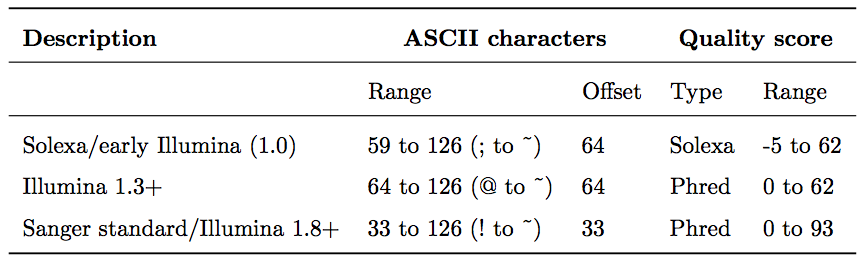
Baz çağrısı kalite skorları Phred aralığı ile temsil edilir. Farklı Illumina (eski adıyla Solexa) versiyonları farklı skorlar ve ASCII ofsetleri kullanmıştır. Illumina format 1.8’den başlayarak, skor artık diğer sekanslama platformları ve sekanslama arşivleri tarafından da kullanılan standart Sanger/Phred formatını temsil etmektedir.
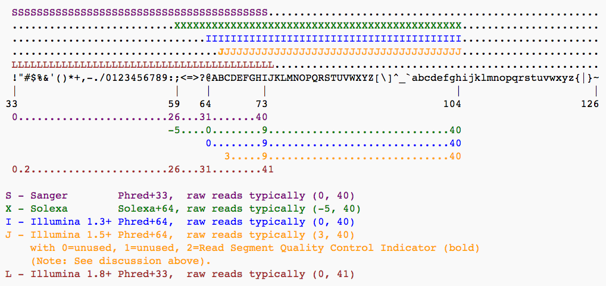
Illumina tarafından kullanılan farklı Phred skoru gösterimlerinin ve orijinal Sanger yorumunun ASCII yorumlaması ve aralıkları. Sanger formatı teorik olarak 93’lük bir skora izin verse de, ham sekanslama okumaları genellikle 60’lık bir Phred skorunu aşmaz. Aslında, çoğu Illumina tabanlı sekanslama 41 ila 45’lik maksimum skorlarla sonuçlanacaktır (görsel Wikipedia’dan alınmıştır)
Veri kalitesinin değerlendirilmesi
NGS verilerinin analizindeki ilk adımlardan biri verinin gerçekte ne kadar iyi olduğunu görmektir. FastqQC, FASTQ veri setlerinin kalitesini değerlendirmenize olanak tanıyan (ve sizin için sekanslama yapanı suçlayıp suçlamama konusunda karar vermenizi sağlayan) harika bir araçtır.
| A. Mükemmel kalite | B. Hmm…Tamam |
|---|---|
| 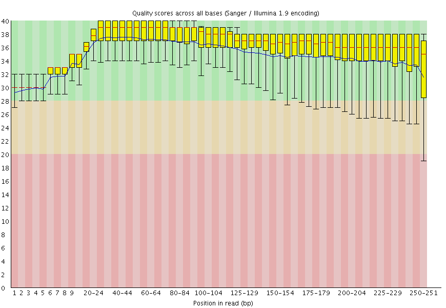 | 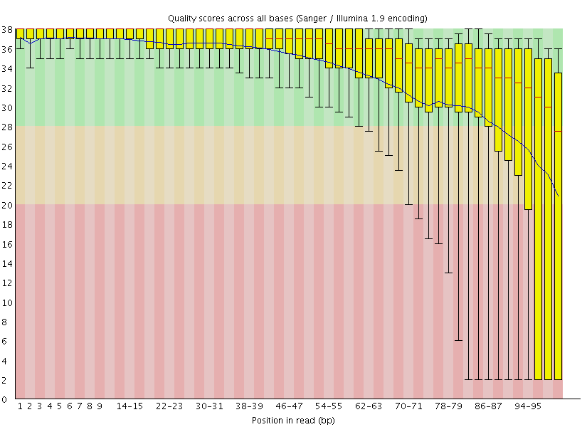 |
Burada iki veri seti için FastQC baz kalite raporlarını görebilirsiniz (araç size başka türde veriler de sunar): A ve B. A veri seti uzun okumalara (250 bp) ve hiçbir kalitenin phred skoru 30’un altına düşmediği çok iyi bir kalite profiline sahiptir. B veri seti, okumaların uçlarının phred skoru 20’nin altına düştüğü önemli ölçüde daha kötüdür. B okumalarının ileri işleme için kırpılması gerekebilir.
Verinizi Haritalama
NGS okumalarının referans sekanslarına karşı haritalanması, analizin temel adımlarından biridir. Şimdi bunun pratikte nasıl yapıldığını göreceğiz. Aşağıda ana akım haritalama araçlarını vurgulayan temel yayınların bir listesi bulunmaktadır:
- 2009 Bowtie 1 - Langmead ve ark.
- 2012 Bowtie 2 - Langmead ve Salzberg
- 2009 BWA - Li ve Durbin
- 2010 BWA - Li ve Durbin
- 2013 BWA-MEM - Li
Önceden hesaplanmış genom indeksine karşı haritalama
Haritalayıcılar genellikle okumaları, genom indeksi adı verilen yüksek erişilebilir bir veri yapısına dönüştürülmüş bir referans sekansa karşı karşılaştırır. Bu tür indeksler haritalama başlamadan önce oluşturulmalıdır. Galaxy örnekleri genellikle halka açık olan bir dizi genom yapısı için indeksler depolar.
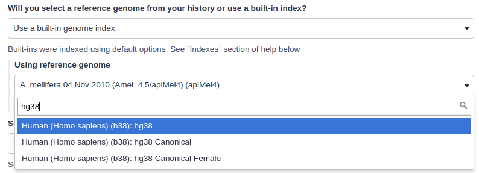
Örneğin, yukarıdaki görsel insan genomunun hg38 versiyonu için indeksleri göstermektedir. Aslında üç seçenek olduğunu görebilirsiniz: (1) hg38, (2) hg38 canonical ve (3) hg38 canonical female. hg38 tüm kromozomları ve yerleştirilmemiş tüm contig’leri içerir. hg38 canonical yerleştirilmemiş sekansları içermez ve sadece 1’den 22’ye kadar olan kromozomlardan, X, Y ve mitokondriyal DNA’dan oluşur. hg38 canonical female Y kromozomu hariç canonical setteki her şeyi içerir.
Önceden hesaplanmış indeks mevcut değilse ne olur?
Eğer Galaxy’de haritalama yapmak istediğiniz genom mevcut değilse, genom sekansınızı FASTA dosyası olarak yükleyebilir ve aşağıda gösterildiği gibi doğrudan haritalayıcıda kullanabilirsiniz (Referans genom yükle History olarak ayarlanmıştır).
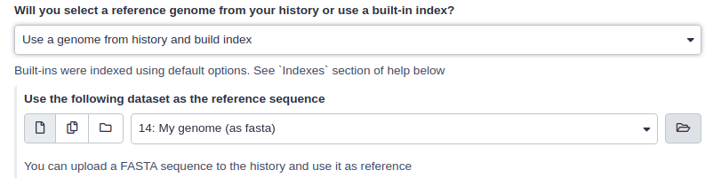
Bu durumda Galaxy önce bu veri setinden bir indeks oluşturacak ve ardından ona karşı haritalama analizi yapacaktır.
SAM/BAM veri setleri
SAM/BAM formatı, hizalanmış okumaları depolamak için kabul edilen bir standarttır (hizalanmamış okumaları da depolayabilir ve BWA gibi bazı haritalayıcılar girdi olarak hizalanmamış BAM kabul eder). Formatın ikili formu (BAM) kompakttır ve (indekslenmişse) hızlıca aranabilir. Galaxy’de BAM veri setleri her zaman indekslidir (bir .bai dosyası eşlik eder) ve koordinat sırasına göre sıralanmıştır. Daha fazla bilgi için tıklayınız.
Sequence Alignment/Map (SAM) formatı, aslında sekanslama okumalarının (veya sorgu sekanslarının) bir referansa hizalanmasını tanımlayan genel bir nükleotid hizalama formatıdır. İnsan tarafından okunabilir, TAB ile ayrılmış SAM dosyaları Binary Alignment/Map formatına sıkıştırılabilir. Bu BAM dosyaları basitçe gzip’lenmiş SAM dosyalarından daha büyüktür, çünkü boyut küçültmeden ziyade hızlı rastgele erişim için optimize edilmişlerdir. Pozisyona göre sıralanmış BAM dosyaları, tüm dosyayı belleğe yüklemeden bir lokusa hizalanan tüm okumaların verimli bir şekilde alınabilmesi için indekslenebilir.
Aşağıda gösterildiği gibi, SAM dosyaları genellikle kısa bir başlık bölümü ve her satırın tek bir okuma hizalamasını temsil ettiği çok uzun bir hizalama bölümü içerir. Aşağıdaki bölümler SAM formatını biraz daha ayrıntılı olarak açıklayacaktır. En kapsamlı ve güncel bilgi için https://github.com/samtools/hts-specs adresine gidin.
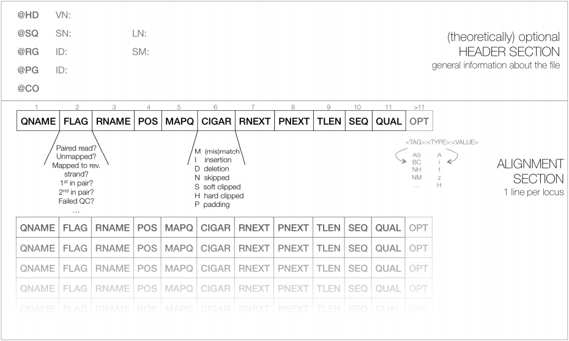
SAM dosyasının şematik gösterimi. İsteğe bağlı başlık bölümündeki her satır “@” ile başlar, ardından uygun kısaltma gelir (örneğin, tüm kromozom adlarını (SN) ve uzunluklarını (LN) listeleyen sekans sözlüğü için SQ). Bir SAM dosyasındaki satırların büyük çoğunluğu genellikle okuma hizalamalarına karşılık gelir; burada her okuma 11 zorunlu giriş (siyah yazı tipi) ve değişken sayıda isteğe bağlı alan (gri yazı tipi) ile tanımlanır. Friederike Dündar, Luce Skrabanek ve Paul Zumbo’nun öğreticisinden alınmıştır.
SAM Başlığı
Başlık bölümü, hizalamanın nasıl oluşturulduğu ve saklandığı hakkında bilgi içerir. Başlık bölümündeki tüm satırlar tab ile ayrılmıştır ve “@” karakteri ile başlar, ardından etiket:değer çiftleri gelir; burada etiket, değerin içeriğini ve formatını tanımlayan iki harfli bir dizedir. Örneğin, başlık bölümündeki “@SQ” satırı, okumaların hizalandığı referans sekansların adları ve uzunlukları hakkında bilgi içerir. Her biri 1.000 bp uzunluğunda üç kromozoma sahip varsayımsal bir organizma için, SAM başlığı aşağıdaki üç satırı içermelidir:
@SQ SN:chr1 LN:1000
@SQ SN:chr2 LN:1000
@SQ SN:chr3 LN:1000SAM hizalama bölümü
İsteğe bağlı başlık bölümünün ardından, her satırın bir sekanslanmış okumaya karşılık geldiği hizalama bölümü gelir. Her okuma için, her zaman aynı sırada görünen 11 zorunlu alan vardır:
<QNAME> <FLAG> <RNAME> <POS> <MAPQ> <CIGAR> <MRNM> <MPOS> <ISIZE> <SEQ> <QUAL>İlgili bilgi mevcut değilse veya geçersizse, alan değerleri (alana bağlı olarak) ‘0’ veya ’*’ olabilir, ancak eksik olamazlar! 11 zorunlu alandan sonra, değişken sayıda isteğe bağlı alan bulunabilir. İşte gerçek bir SAM dosyasından tek bir satır örneği (yana kaydırmanız gerekebilir):
ERR458493.552967 16 chrI 140 255 12M61232N37M2S * 0 0 CCACTCGTTCACCAGGGCCGGCGGGCTGATCACTTTATCGTGCATCTTGGC BB?HHJJIGHHJIGIIJJIJGIJIJJIIIGHBJJJJJJHHHHFFDDDA1+B NH:i:1 HI:i:1 AS:i:41 nM:i:2Aşağıdaki tablo her alanın formatını ve içeriğini açıklamaktadır. FLAG, CIGAR ve isteğe bağlı alanlar (mavi ile işaretlenmiş) aşağıda daha ayrıntılı olarak açıklanmıştır. İsteğe bağlı alanların sayısı farklı SAM dosyaları arasında ve hatta aynı dosya içindeki okumalar arasında büyük ölçüde değişebilir.
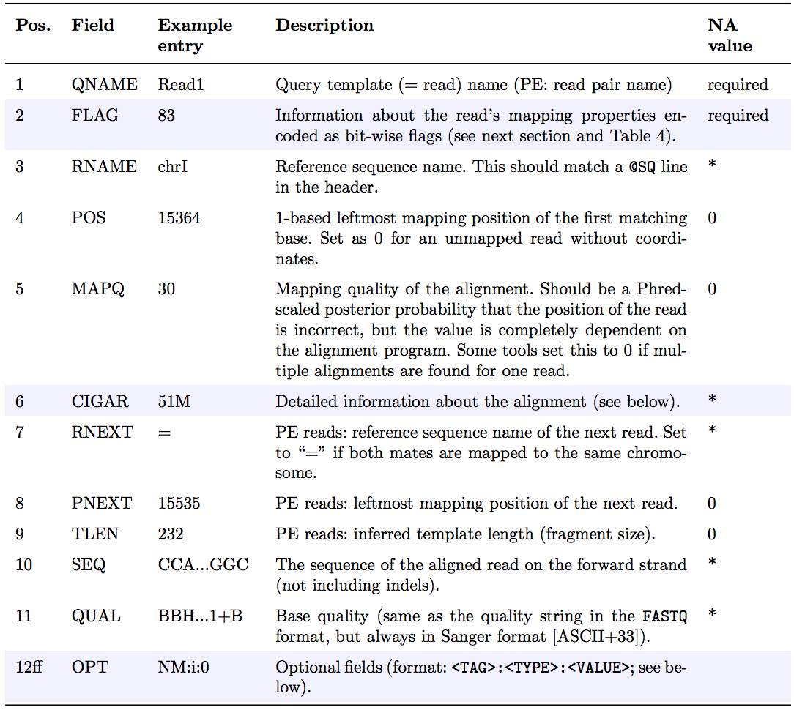
FLAG alanı
FLAG alanı, özellikle PE (eşlenmiş uç) okumalar için önemli olan, tek tek okuma hakkında çeşitli bilgi parçalarını kodlar. Bir dizi bitten (0, 1) oluşturulan bir tamsayı içerir. Bu şekilde, birden fazla ikili (Evet/Hayır) soruya verilen yanıtlar, her bir bitin ayrı ayrı adreslenebileceği ve atanabileceği bir bit serisi olarak kompakt bir şekilde saklanabilir.
Aşağıdaki tablo FLAG alanında kodlanabilen farklı özelliklere genel bir bakış sunar. SAM formatı ve samtools geliştiricileri, belgelerinde farklı bitlere atıfta bulunmak için onaltılık kodlamayı kullanma eğilimindedir. Ancak, verilen bir SAM dosyasındaki FLAG alanının değeri her zaman altta yatan ikili değerlerin toplamının ondalık gösterimi olacaktır (aşağıdaki tabloda, satır 2’de gösterildiği gibi).
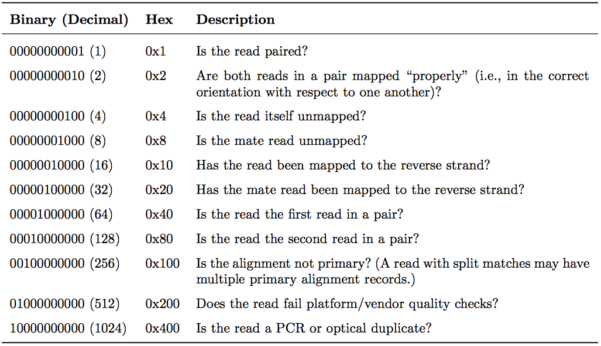
SAM dosyalarının FLAG alanı, ilgili okuma hizalaması hakkındaki bilgileri tek bir ondalık sayıda saklar. Ondalık sayı, her ikili bite karşılık gelen Evet/Hayır sorularının tüm yanıtlarının toplamıdır. Onaltılık gösterim, tek tek bitlere (sorulara) atıfta bulunmak için kullanılır. İlgili durum doğruysa bir bit ayarlanır. Örneğin, bir okuma eşlenmişse, 0x1 ayarlanır ve ondalık değer 1 döndürülür. Bu nedenle, eşlenmiş okumalarla ilişkili tüm FLAG değerleri tek ondalık sayılar olmalıdır. Tersine, 0x1 biti ayarlanmamışsa (= okuma eşlenmemişse), 0x2, 0x8, 0x20, 0x40 ve 0x80 hakkında varsayımda bulunulamaz çünkü bunlar eşlenmiş okumalara atıfta bulunur.
Tek okumalarla yapılan bir çalışmada, en sık göreceğiniz bayraklar şunlardır:
- 0: Bu okuma ileri zincire haritalanmıştır. (Bit bazlı bayrakların hiçbiri ayarlanmamıştır.)
- 4: Okuma haritalanmamıştır (
0x4ayarlıdır). - 16: Okuma ters zincire haritalanmıştır (
0x10ayarlıdır)
(0x100, 0x200 ve 0x400 çoğu hizalayıcı/haritalayıcı tarafından kullanılmaz, ancak prensipte tek okumalar için ayarlanabilir.) PE (eşlenmiş uç) deneyinde görebileceğiniz bazı yaygın FLAG değerleri şunları içerir:
77 (= 1 + 4 + 8 + 64) | Okuma eşlenmiştir, çiftteki ilk okumadır, her ikisi de haritalanmamıştır. |
83 (= 1 + 2 + 16 + 64) | Okuma eşlenmiştir, uygun bir çiftte haritalanmıştır, çiftteki ilk okumadır ve ters zincire haritalanmıştır. |
99 (= 1 + 2 + 32 + 64) | Okuma eşlenmiştir, uygun bir çiftte haritalanmıştır, çiftteki ilk okumadır ve eşi ters zincire haritalanmıştır. |
133 (= 1 + 4 + 128) | Okuma eşlenmiştir, çiftteki ikinci okumadır ve haritalanmamıştır. |
137 (= 1 + 8 + 128) | Okuma eşlenmiştir, çiftteki ikinci okumadır ve eşi haritalanmamışken kendisi haritalanmıştır. |
141 (= 1 + 4 + 8 + 128) | Okuma eşlenmiştir, çiftteki ikinci okumadır, ancak her ikisi de haritalanmamıştır. |
147 (= 1 + 2 + 16 + 128) | Okuma eşlenmiştir, uygun bir çiftte haritalanmıştır, çiftteki ikinci okumadır ve ters zincire haritalanmıştır. |
163 (= 1 + 2 + 32 + 128) | Okuma eşlenmiştir, uygun bir çiftte haritalanmıştır, çiftteki ikinci okumadır ve eşi ters zincire haritalanmıştır. |
FLAG tam sayılarını yukarıda gösterilenler gibi düz İngilizce açıklamalara hızlıca çevirmek için kullanışlı bir web sitesi: https://broadinstitute.github.io/picard/explain-flags.html
CIGAR dizisi
CIGAR, Concise Idiosyncratic Gapped Alignment Report (Özlü İdiyosinkratik Boşluklu Hizalama Raporu) anlamına gelir. SAM dosyasının bu altıncı alanı, okumayı o belirli lokusta referans sekansa haritalamak için hangi işlemlerin gerekli olduğunu gösteren bir CIGAR dizisi içerir.
CIGAR formatında aşağıdaki işlemler tanımlanmıştır (ayrıca aşağıdaki şekle bakın):
- M - Hizalama (bir sekans eşleşmesi veya uyuşmazlığı olabilir!)
- I - Referansa kıyasla okumada ekleme
- D - Referansa kıyasla okumada silme
- N - Referanstan atlanan bölge. mRNA-genom hizalamaları için, N işlemi bir intronu temsil eder. Diğer hizalama türleri için, N’nin yorumu tanımlanmamıştır.
- S - Yumuşak kırpma (kırpılan sekanslar okumada mevcuttur); S’nin yalnızca H işlemleri arasında ve dizinin uçlarında olabilir
- H - Sert kırpma (kırpılan sekanslar hizalama kaydında mevcut DEĞİLDİR); yalnızca ilk ve/veya son işlem olarak mevcut olabilir
- P - Dolgu (dolgulu referanstan sessiz silme)
- = - Sekans eşleşmesi (yaygın olarak kullanılmaz)
- X - Sekans uyuşmazlığı (yaygın olarak kullanılmaz)
M, I, S, =, X işlemlerinin uzunluklarının toplamı okumanın uzunluğuna eşit olmalıdır. İşte bazı örnekler:
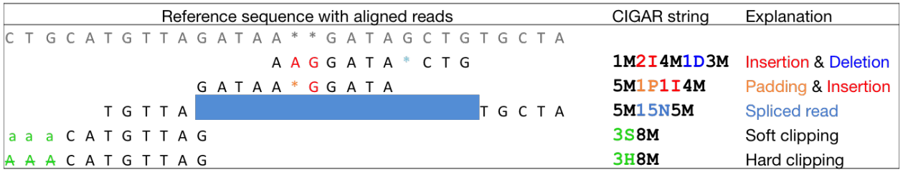
Friederike Dündar, Luce Skrabanek ve Paul Zumbo’nun eğitim materyalinzden alınmıştır.
İsteğe bağlı alanlar
On bir zorunlu SAM dosya alanından sonra, isteğe bağlı alanlar <TAG>:<TİP>:<DEĞER> formatında anahtar-değer çiftleri olarak sunulur, burada TİP şunlardan biridir:
A- Karakteri- Tamsayıf- Ondalıklı sayıZ- DiziH- Onaltılık dizi
Bu isteğe bağlı alanlarda saklanan bilgiler, haritalayıcıya bağlı olarak büyük ölçüde değişecektir ve yeni etiketler serbestçe eklenebilir. Ayrıca, SAM dosyası içindeki okumalar, SAM dosyasını üreten programa bağlı olarak farklı sayıda isteğe bağlı alana sahip olabilir. Yaygın olarak kullanılan isteğe bağlı etiketler şunları içerir:
AS:i- Hizalama skoruBC:Z- Barkod sekansıHI:i- Eşleşme okuma için i. hit’tirNH:i- Sorgu sekansı için raporlanan hizalamaların sayısıNM:i- Sorgunun referansa göre düzenleme mesafesiMD:Z- Uyuşmazlıkların tam konumlarını içeren dizi (CIGAR dizisini tamamlamalıdır)RG:Z- Okuma grubu (başlıkta @RG mevcutsa ID’den sonraki girişle eşleşmelidir)
Böylece, örneğin, referansa mükemmel şekilde haritalanan (yani uyuşmazlık içermeyen) okumaları seçmek için NM:i:0 etiketini kullanabiliriz. Yukarıda listelenen isteğe bağlı alanlar oldukça standartlaştırılmış olsa da, X, Y ve Z ile başlayan etiketler özellikle serbest kullanım için ayrılmıştır ve asla resmi SAM dosya formatı spesifikasyonlarının bir parçası olmayacaktır. Örneğin XS, TopHat (daha sonra tartışacağımız bir RNA-seq analiz aracı) tarafından zincir bilgisini kodlamak için kullanılır (örn. XS:A:+) iken Bowtie2 ve BWA, çoklu hizalamaları olan okumalar için bir sonraki en iyi skorlu hizalamanın hizalama skorunu saklamak için XS:i: kullanır (örn. XS:i:30).
Okuma Grupları
SAM/BAM formatının temel özelliklerinden biri, bireysel okumaları okuma grubu etiketleriyle etiketleme yeteneğidir. Bu, birden çok deneyin sonuçlarını tek bir BAM veri setinde birleştirmeye olanak tanır. Bu, downstream lojistiği önemli ölçüde basitleştirir: birden çok veri setiyle uğraşmak yerine sadece bir taneyle ilgilenebilirsiniz. Varyant çağırıcılar gibi birçok downstream analiz aracı, okuma grubu verilerini tanımak ve sonuçları okuma grubu bazında çıkarmak üzere tasarlanmıştır.
BAM okuma gruplarının en iyi açıklamalarından biri GATK destek sitesinde bulunmaktadır. En önemli okuma grubu etiketlerini - ID, SM, LB ve PL - açıklayan iki tabloyu GATK forumundan minnetle aldık ve burada sunuyoruz:
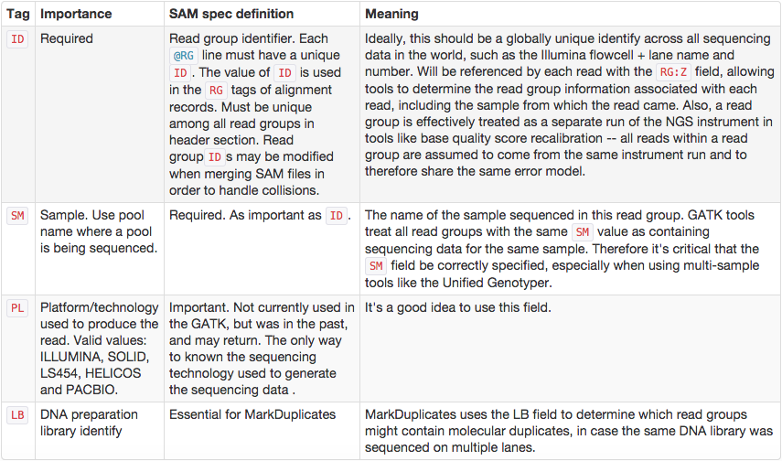
GATK forumu ayrıca aşağıdaki örneği de sunmaktadır:
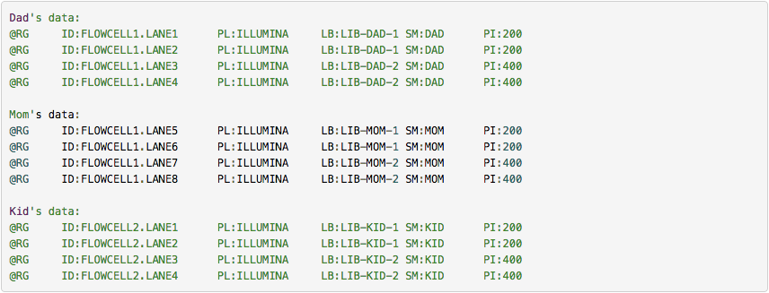
SAM/BAM veri setlerinin işlenmesi
SAM/BAM veri setlerini işlemek için dört ana araç setini destekliyoruz:
- DeepTools - derin sekanslama DNA sekanslama deneylerinden elde edilen verilerin görselleştirilmesi, kalite kontrolü ve normalizasyonu için kullanıcı dostu araçlar paketi.
- SAMtools - SAM/BAM formatındaki hizalamaları manipüle etmek için çeşitli araçlar; sıralama, birleştirme, indeksleme ve pozisyon başına hizalamaları oluşturma dahil.
- BEDtools - başlangıçta BED formatı için yazılan araç seti, BAM ve VCF veri setlerinin analizi için genişletilmiştir.
- Picard - yüksek verimli sekanslama (HTS) verilerini ve formatlarını manipüle etmek için bir dizi Java aracı.